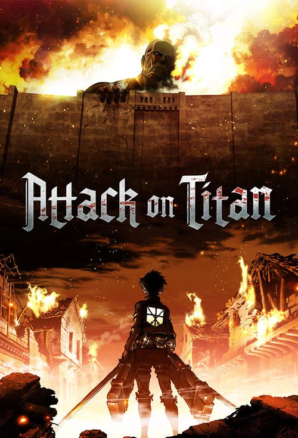
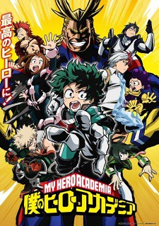
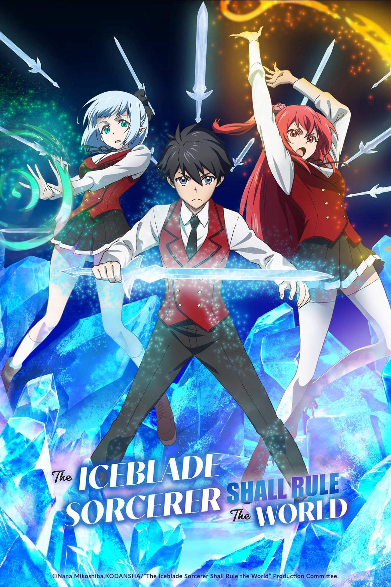

Attack on Titan

Descrição:Attack on Titan (AOT) é um anime japonês que conta a história de Eren Yeager e seus amigos em um mundo onde a humanidade vive cercada por enormes muralhas para se proteger de criaturas gigantes chamadas Titãs, que devoram seres humanos. Ao longo da história, eles enfrentam batalhas, mistérios, traições e descobertas surpreendentes sobre a verdadeira origem dos Titãs e do mundo em que vivem.
Minha Opinião:O anime tem uma história impecável e muito bem construída, e com uma animação bem feita, tornando esse anime uma das melhores obras já feitas.
Nota:10/10
Boku no Hero

Descrição:Boku no Hero Academia é um anime que acompanha Izuku Midoriya, um garoto que nasceu sem poderes em um mundo onde quase todos possuem habilidades especiais. Mesmo assim, ele sonha em se tornar um grande herói e proteger as pessoas. Sua jornada começa ao ingressar na U.A., uma escola que treina jovens para se tornarem heróis profissionais.
Minha Opinião:É um anime shounen com vilões incríveis e bem desenvolvidos, ótima animação e um sistema de poder bem interessante, que é a "individualidade". Gostei dos personagens, que são carismáticos e têm ótima personalidade.
Nota:8/10
The Iceblade Sorcerer Shall Rule the World

Descrição:Em breve.
Minha Opinião:Em breve.
Nota:Em breve.